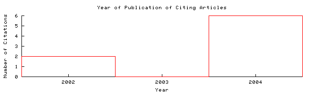

Jane Hunter  Home/Search
Context Related Home/Search
Context Related
| semanticweb.org/SWWS/prog...paper59.pdf Cached: PS.gz PS PDF This document uses CoBlitz to cache paper downloads. If your firewall is blocking outgoing connections to port 3125, you can use these links to download local copies.
Image Update HelpPS.gz PS PDF Problem Downloading? From: semanticweb.org/SWWS/prog...index (more) (Enter author homepages) |
Rate this article:     (best) (best)Comment on this article |
Abstract: . For the past two years the Moving Pictures Expert Group (MPEG), a working group of ISO/IEC, have been developing MPEG-7 [1], the "Multimedia Content Description Interface", a standard for describing multimedia content. The goal of this standard is to develop a rich set of standardized tools to enable both humans and machines to generate and understand audiovisual descriptions which can be used to enable fast efficient retrieval from digital archives (pull applications) as well as filtering of ... (Update)
Cited by: More
A Motivating Scenario for Designing an Extensible.. - Language Rapha El (2004) (Correct)
Coupling OWL with MPEG-7 and TV-Anytime for.. - Tsinaraki.. (Correct)
Similar documents (at the sentence level):
6.8%: Combining RDF and XML Schemas to Enhance - Interoperability Between Metadata (Correct)
Active bibliography (related documents): More All
0.5: A Model-driven Approach for Designing - Distributed Web Information (2005) (Correct)
0.5: An OAI Approach to Sharing Subject Gateway Content - Andy Powell Ukoln (Correct)
0.5: Dynamic Adaptive Mapping of Videos in a Hierarchical.. - Zhou, Lüling (2000) (Correct)
Similar documents based on text: More All
0.5: Unknown - (2002) (Correct)
0.5: Conceptual Modeling; of Audio-Visual Content - Smith, Benitez (Correct)
0.4: The ABC Ontology and Model - Carl Lagoze Cornell (Correct)
Related documents from co-citation: More All
1880: XML Schema Part 0: Primer (context) - Fallside - 2000
1760: OWL Web Ontology Language Overview (context) - Guiness, ZSPLITZvan - 2004
1320: Resource Description Framework (context) - Klyne, Carroll - 2003
BibTeX entry: (Update)
Hunter, J.: Adding Multimedia to the Semantic Web - Building an MPEG-7 Ontology. Proceedings of the First Semantic Web Working Symposium (SWWS), , Stanford, USA (2001) 261-281 http://citeseer.ist.psu.edu/hunter01adding.html More
@misc{ hunter01adding,
author = "J. Hunter",
title = "Adding Multimedia to the Semantic Web - Building an MPEG-7 Ontology",
text = "Hunter, J.: Adding Multimedia to the Semantic Web - Building an MPEG-7
Ontology. Proceedings of the First Semantic Web Working Symposium (SWWS),
, Stanford, USA (2001) 261-281",
year = "2001",
url = "citeseer.ist.psu.edu/hunter01adding.html" }
Citations (may not include all citations):47 WC Recommendation (context) - Part, May et al. - 2001
47 WC Recommendation (context) - Part, May et al. - 2001
47 WC Recommendation (context) - Part, May et al. - 2001
31 WC Recommendation November (context) - XSLT, November et al. - 1999
20 Towards Second and Third Generation Web-Based Multimedia - van Ossenbruggen - 2001
5 MetaNet -- A Metadata Term Thesaurus to Enable Semantic Inte.. (context) - Hunter - 2001
5 A Comparison of Schemas for Video Metadata Representation (context) - Hunter, Armstrong - 1999
3 The ABC Ontology and Model - Lagoze, Hunter
3 Overview of the MPEG-7 Standard (version 5.0 (context) - Martinez - 2001
3 An Event-Aware Model for Metadata Interoperability - Lagoze, Hunter et al. - 2000
2 Learning Object Meta-data Scheme (context) - Technology, Learning et al.
2 Revised Definition of the CIDOC Conceptual Reference Model (context) - CIDOC, Group - 1999
2 orgdcdocumentrec dce (context) - Metadata, Version et al. - 1999
2 WC Recommendation February (context) - Model, Recommendation et al. - 1999
2 The indecs Metadata Schema Building Blocks (context) - Rust, Bide - 1999
2 WC Candidate Recommendation March (context) - Specification, March et al. - 2000
2 tv-anytime (context) - Forum, www
1 oil-index (context) - OIL, Specification et al. - 2001
1 Combining RDF and XML Schemas to Enhance Metadata Interopera.. (context) - Hunter, Lagoze - 2001
1 Content Standard for Digital Geospatial Metadata (context) - for, Metadata et al.
1 itmpegpublicmpeg _pdtr (context) - Framework, cselt et al.

The graph only includes citing articles where the year of publication is known.
Documents on the same site (http://www.semanticweb.org/SWWS/program/index.html): More
Describing Computation within RDF - Goad (Correct)
The Semantic Web As "Perfection Seeking:" A View from .. - Tuttle, Brown.. (Correct)
CREAM - Creating relational metadata with a.. - Handschuh, Staab.. (Correct)
Online articles have much greater impact More about CiteSeer.IST Add search form to your site Submit documents Feedback
CiteSeer.IST - Copyright Penn State and NEC